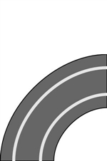
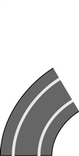

Circuit de course
Le circuit de voitures électriques de Sophie se compose de quatre éléments de formes différentes.
|  |  |  |
|
| Tronçon courbe à 90° | Tronçon courbe à 60° | Tronçon droit de 30cm | Tronçon droit de 15cm |
Les tronçons courbes peuvent être utilisés pour les virages vers la gauche ou vers la droite : "gauche 90", "droite 90", "gauche 60", "droite 60".
Les voitures ne peuvent circuler que si le circuit est fermé et qu'il comprend un tronçon électrique. Cet élément spécial est un tronçon droit de 15 cm qui alimente le circuit en courant.
Sophie conçoit sans cesse de nouveaux circuits de course et note toujours comment ils sont construits. La notice suivante décrit l'un de ses premiers circuits viables : tronçonspécial, gauche90, gauche90, tronçondroit30, gauche90, gauche90, tronçondroit15.
Sophie voudrait reconstruire un ancien circuit de course. Elle feuillette ses notes et découvre des fautes. Rien qu'en lisant les notes suivantes, elle constate que seule une de celles-ci décrit un circuit de course qui fonctionne.
Laquelle de ces notices décrit un circuit valide ?